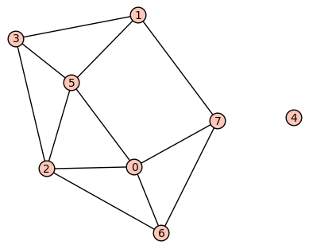

Having learned some basic terminology about graphs, we now turn our attention to how to represent graphs in a computer. There are many ways to do this! We will focus on representations that can be used in a broad variety of settings, namely:
You're actually familiar with much of this, since the Sage/Python structures for representing graphs are similar to those for representing directed graphs.
Also in this section we will learn how to use Sage for working with graphs, particularly how to define a graph in Sage, display it, and then use Sage built-in functions for finding out information about graphs.
Basic objectives: Each student is responsible for gaining proficiency with each of these tasks prior to engaging in class discussions, through the use of the learning resources (below) and through the working of exercises (also below). Note that important new terminology is given in italics.
Advanced objectives: The following objectives are the subject of class discussion and further work; they should be mastered by each student during and following class discussions.
To gain proficiency in the learning objectives, use the following resources. You may include other resources if you wish, in addition to or in replacement of the following.
Textbook: In ADS, read Section 9.2 as follows: First, read from the beginning of the section down to "Mathematica Note". Then skip all of the "Mathematica Note". Then read the "Sage Note" with SageMath Cloud up in front of you so you can type in the code (into a Sage worksheet).
Sage Worksheet: I have prepared a Sage worksheet that discusses how graphs are entered, visualized, and computed with in Sage. This is posted as both a downloadable Sage worksheet and as a view-only PDF at the Guided Practice assignment. Read this carefully and work with it because knowledge of how to do basic work in Sage with graphs will be assumed after our class meeting is over.
The following exercises are to be done during and following your reading and viewing of the resources. Work these out on paper and then enter the responses into the appropriate submission form (see Submission Instructions) by the deadline. You will receive a mark of Pass if each item response shows a good-faith effort to be right and is submitted prior to the deadline.
The following questions pertain to the undirected graph below:

Matrix([... and then you enter in a list of lists. See the Sage worksheet for an example.)Submit your responses using the form at this link: http://bit.ly/1MPZEWr